Detailed Description
Detailed Description
I-bus
The system is connected to the I-bus.
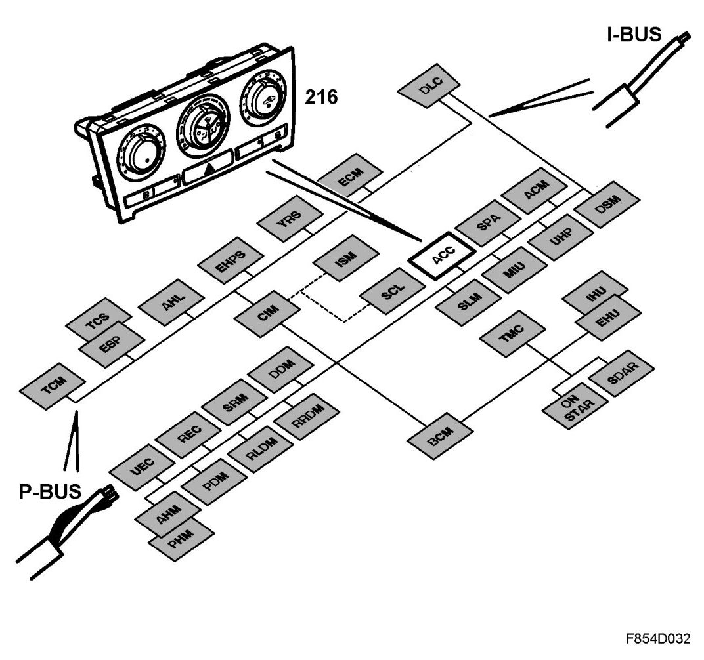
Climate zones
ACC makes it possible for the climate control system to divide the car into two climate zones in which the driver can set one temperature and the front seat passenger can set another. This is done via two air mixing dampers - one for the driver zone and one for the front passenger zone. The rear seat passengers receive a mixture of the air from the two front temperature zones.
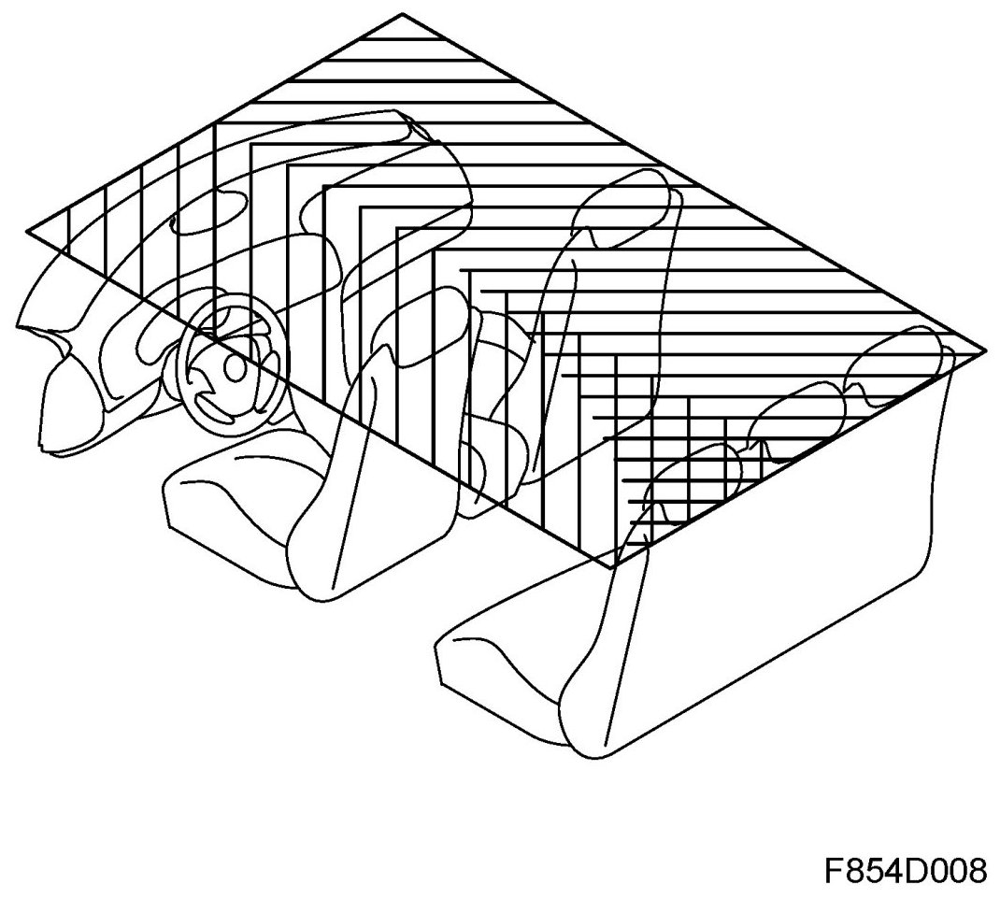
Air mixture
A stepping motor for each climate zone helps to control the temperature of the air mixture. The air mixture is adjusted with one air mixing damper for the driver zone and one for the front seat passenger zone. The air mixture temperature from the heat exchanger is affected by fan speed and the air mixing damper position. Depending on the desired temperature, the corresponding air mixing damper can direct a specific amount of the incoming air through the heat exchanger before the air enters the cabin. In this way, warm and cool air can be mixed to achieve the desired temperature. If a low temperature is selected, the air mixing damper closes so that the air is prevented from passing through the heat exchanger.
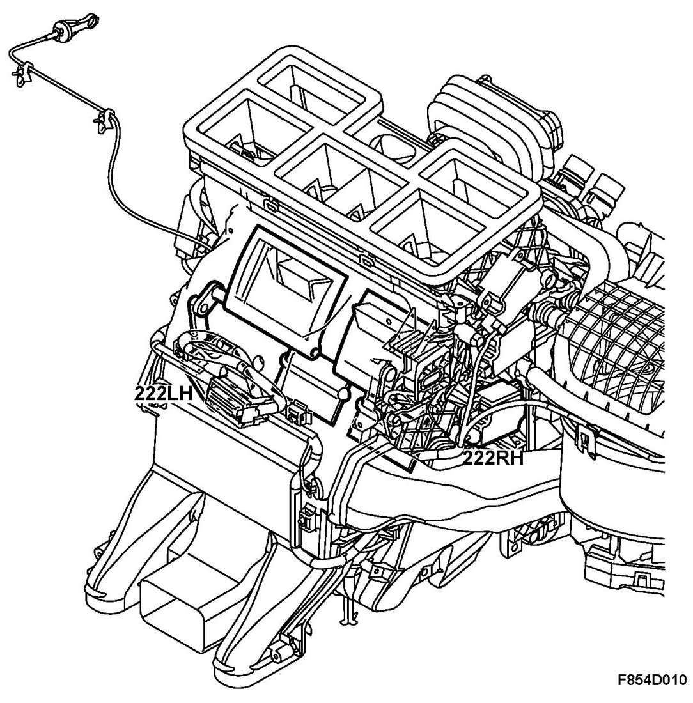
Air distribution
The heating and ventilation unit contains separate dampers for air distribution to the defroster, floor and panel vents. There is one damper for either side of the panel. Each damper is rotated by a stepping motor with a feed from the control module.
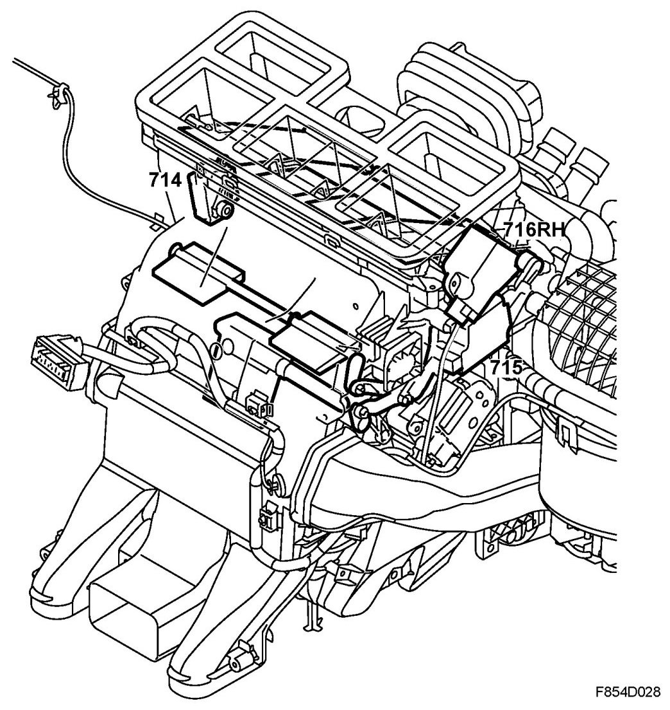
The climate control unit directs air from the air distribution damper to the defroster, panel or floor vents. From the air distribution damper, air is directed via a number of outlets to different vents located throughout the cabin.
Defroster setting
Air is directed to the vents on the top side of the dashboard and to the front side window defroster vents. There are four defroster vents; two direct the air to the windshield and two smaller vents on either side of the dashboard direct air to the front side windows.
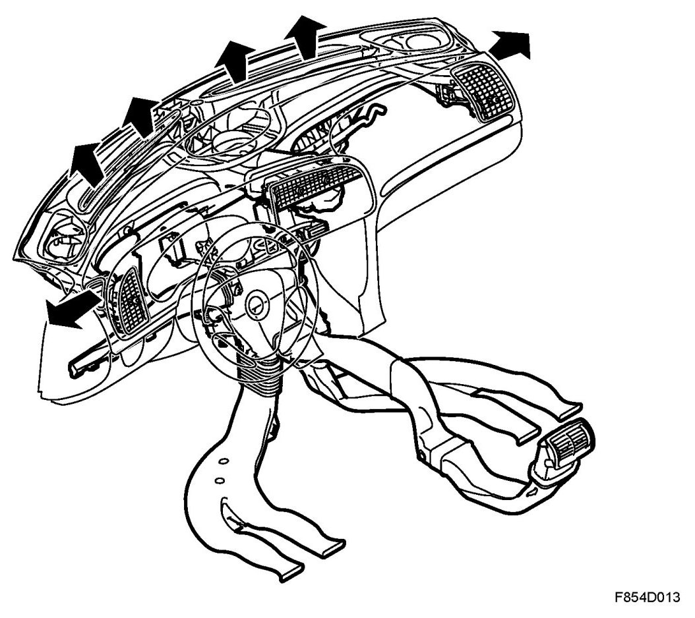
Panel setting
The air is directed to the dashboard vents and vents in the rear edge of the centre console.
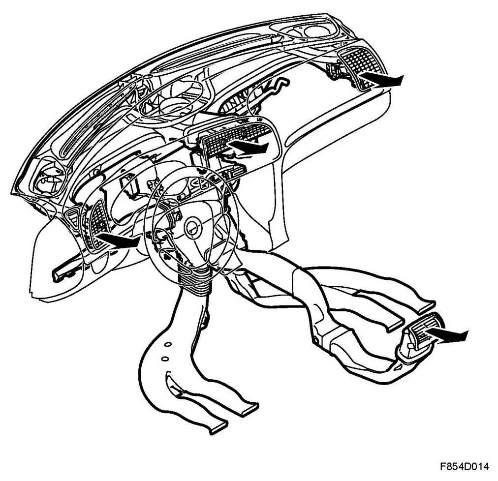
Of the three panel vents in the dashboard, the centre panel vent is divided for use by the driver and passenger. Air distribution is controlled individually and the air flow direction can be adjusted horizontally and vertically while the amount of air can be variably adjusted.
Two panel vents for rear seat passengers are located on the rear edge of the centre console. The amount of air and distribution can be adjusted individually.
Floor setting
Air is directed to vents under the dashboard and under the front seats to the rear floor outlets.
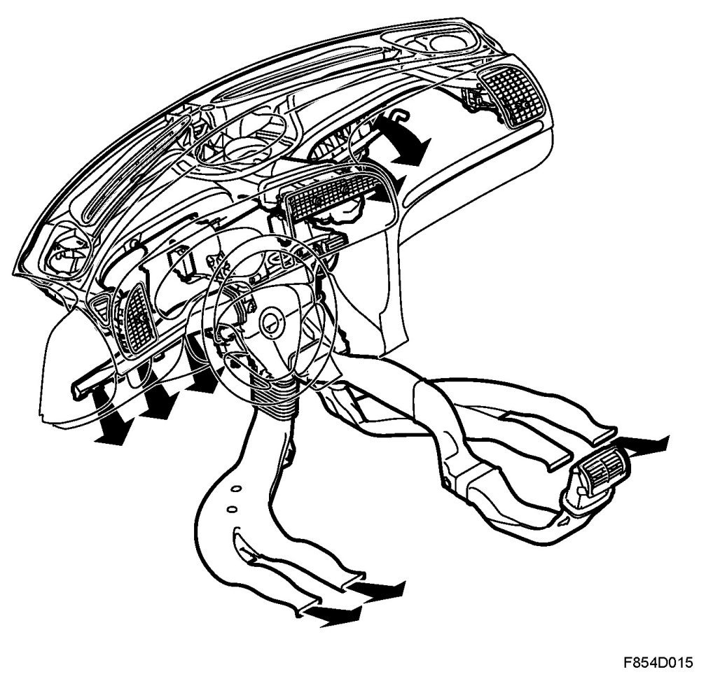
At the same time, a smaller amount of air flows to the defroster vents to prevent side window downdraft.
Of the four floor air outlets, the two that lead to the underside of the dashboard direct air to the floor by the driver and passenger. Two air outlets lead to the underside of the front seats and direct air to the floor for the rear seat passengers.
TRI setting
Air is directed to the defroster, panel and floor settings simultaneously.
BI mode
Air is directed to the panel and floor positions at the same time.
Heating mode
Air is directed to the defroster, and floor positions at the same time.
Air recirculation
The climate control unit is equipped with a recirculation flap located near the ventilation fan. The recirculation flap has two settings; fresh air and recirculation. If recirculation is activated, no air enters the climate control unit from outside the car. Instead, the cabin air is recirculated.
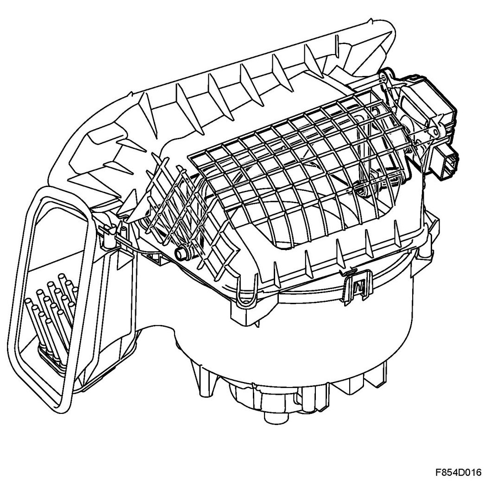
The recirculation flap is opened and closed with a direct current motor.
Fresh-air filter
The filter is located in the bulkhead partition space on the passenger side. There are two types of fresh-air filters.
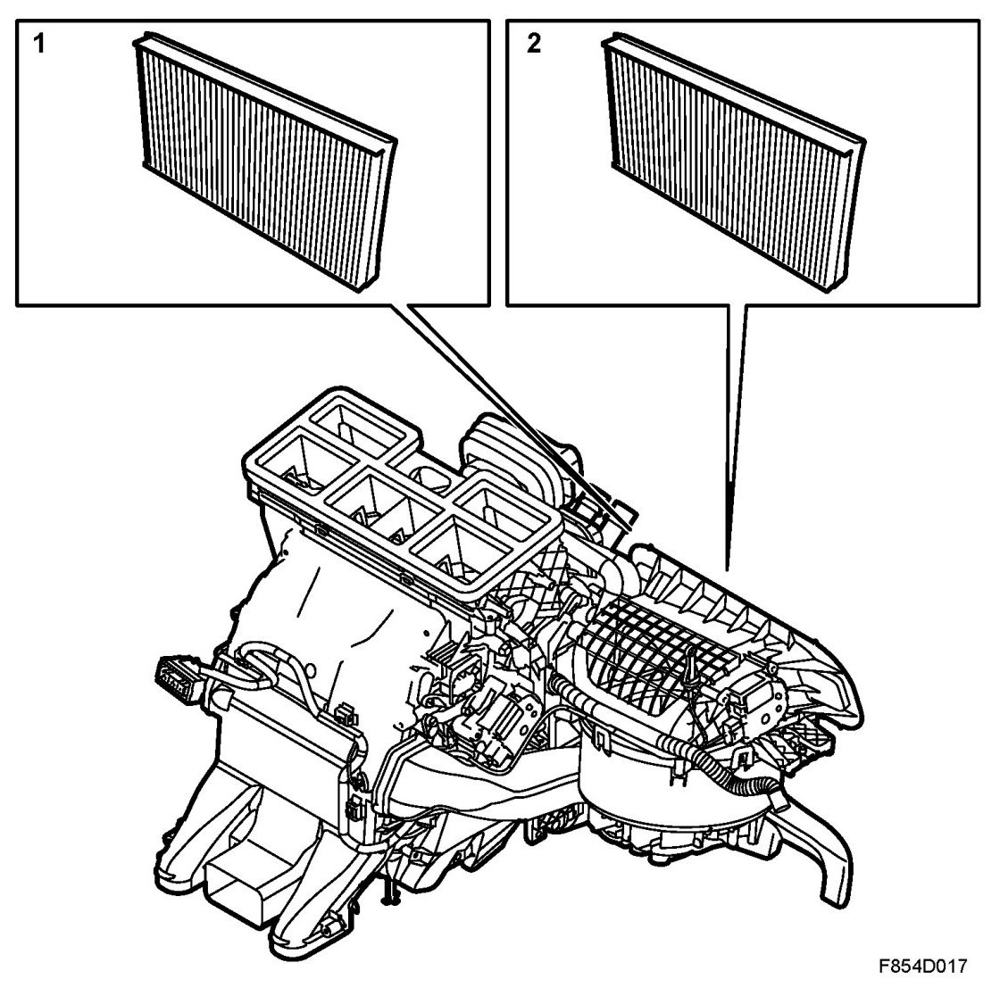
Particle air filter
The fibres in the particle air filter stop larger particles but must rely on an electrostatic charge to trap smaller particles. Because of the electrostatic charge, the filter attracts particles much in the same way as a magnet attracts metal filings.
Combination filter
Combination filters are available for certain car variants. The fibres in the particle air filter stop larger particles but must rely on an electrostatic charge to trap smaller particles. Because of the electrostatic charge, the filter attracts particles much in the same way as a magnet attracts metal filings.
Besides removing all visible particles, the filter removes particles such as pollen, plant spores and different types of dust from the cabin air. The active charcoal in the filter reduces the concentration of hazardous substances such as benzene and toluene.
A/C system
Air conditioning lowers the cabin air temperature to a comfortable level when ambient temperatures are high and provides the ACC system with a fixed temperature setting with which to balance the cabin temperature setting. The unit reduces cabin humidity in wet weather without raising the cabin air temperature, which in turn keeps the windows free from mist with a low fan speed.
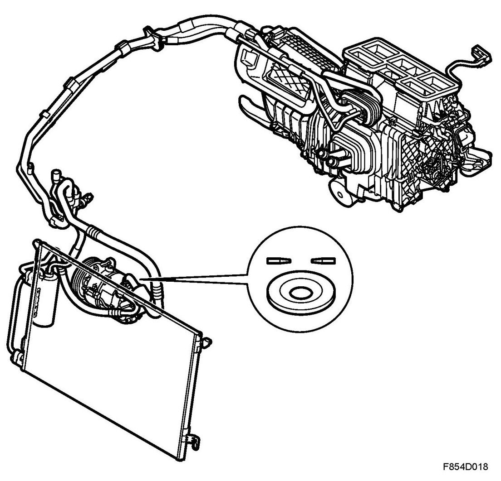
The A/C unit does not produce cold air but instead removes warmth from incoming air or air recirculated inside the cabin. In order to achieve this, a substance which has a lower temperature than the air due to pressure difference is used since heat is always transferred from a warmer object to a cooler object.
The refrigerant boils and vaporises at low temperatures. The refrigerant maintains a constant pressure/temperature ratio which means that if the pressure is altered, the temperature is altered and vice versa. This condition remains constant if the volume remains the same.
By allowing the refrigerant to circulate in a closed system where the pressure can be altered, the temperature can be changed. If the pressure and temperature are altered sufficiently, the refrigerant begins to vaporise. When the system pressure is at the correct level, the refrigerant vaporises at approximately 0 to +4 degrees C. The process occurs in the A/C system evaporator.
A necessary condition for refrigerant vaporisation is the presence of heat extracted from the air around the evaporator. When heat is extracted from the air surrounding the evaporator, the air becomes cooler. It is this cooler air which is directed into the cabin.
Heat which the refrigerant has gathered in the evaporator is transported to the engine bay where it is released into the ambient air via an air-cooled condenser.
Refrigerant
A liquid with the designation R134a is used as a refrigerant. R134a heats and vaporises at a temperature of approximately -30 degrees C in normal air pressure. When the refrigerant vaporises in the evaporator, it extracts heat from the surrounding air. This cooled air is directed into the cabin.
R134a is a chlorine-free refrigerant.
For information regarding refrigerants, see Draining and filling refrigerant.
Cooled glove box
Cars with ACC are equipped with a hose connecting the heating and ventilation unit to the glove box. With controls inside the glove box, a vent allowing cool air into the glove box can be opened or closed. In this way, the contents of the glove box can be kept cool.
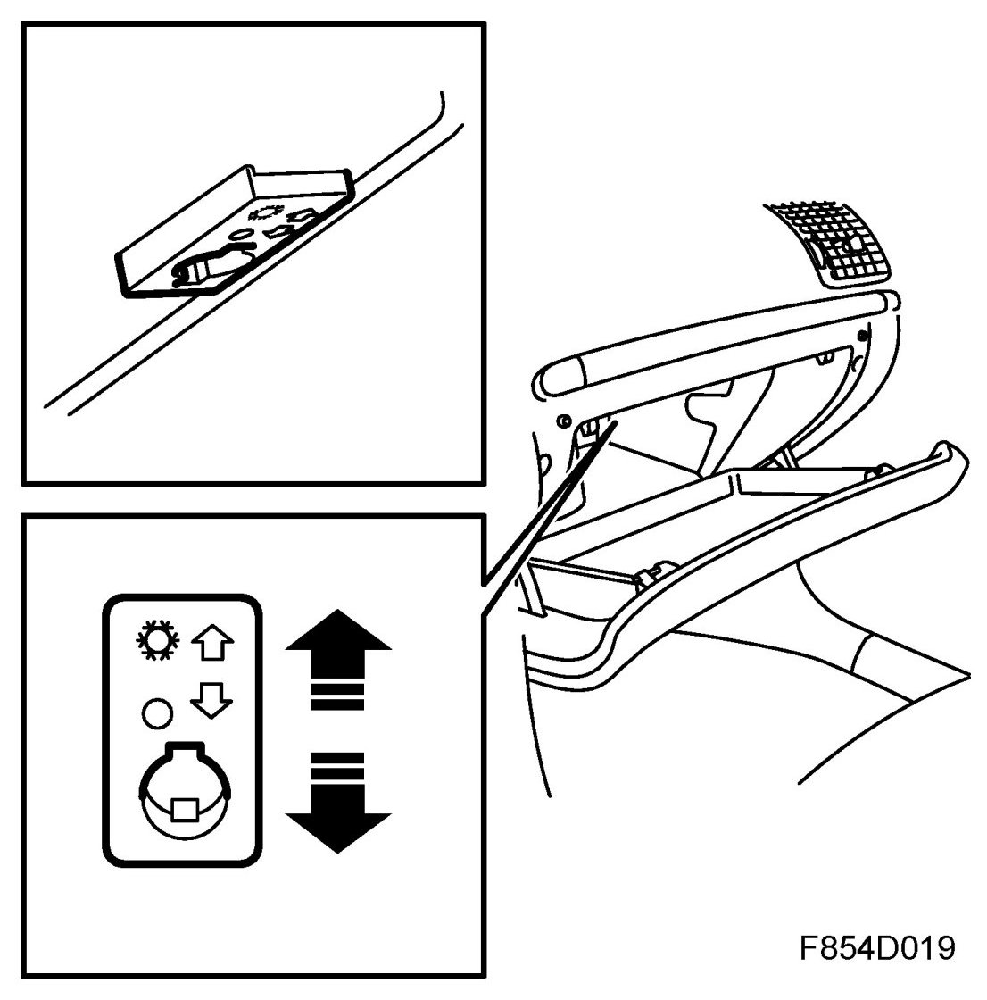
Refrigerant flow
1. Compressor: The refrigerant comes to the compressor from the evaporator under low pressure and in a gas state. As the name implies, the compressor compresses the gas, causing its pressure and temperature to increase. The hot, gaseous refrigerant is then guided on to the condenser.
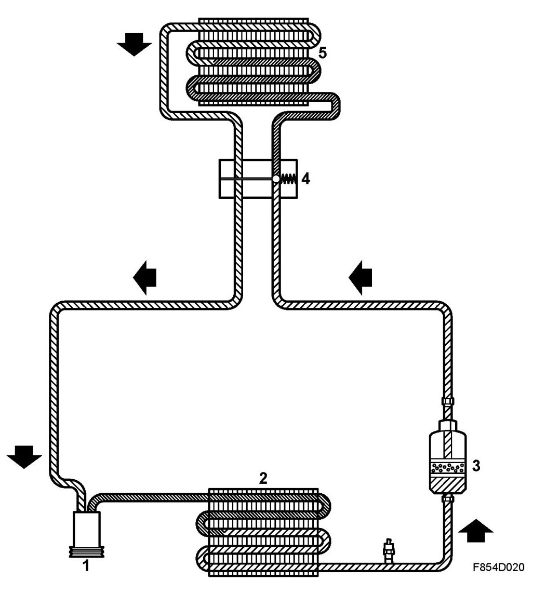
2. Condenser: The hot refrigerant with high pressure is pumped by the compressor into the condenser's tubular coils, which are equipped with cooling fins that are flushed with air via the radiator fan and travel wind. Because heat is always transferred from a hotter to a colder object, the hot refrigerant will radiate some of its heat to the colder air. When the hot, gaseous refrigerant loses some of its warmth, it begins to condense into fluid.
3. Receiver: The refrigerant is stored and dehumidified in the receiver. The refrigerant enters the receiver in fluid form at high pressure and high temperature. It passes through a filter unit, where it is dehumidified and any particles are separated. The refrigerant is then led on in fluid form to the expansion valve. The system's pressure sensor is located in the pipe between the receiver and the expansion valve.
4. Expansion valve: The refrigerant that enters the expansion valve is in a fluid state with high pressure and high temperature. The expansion valve is designed to regulate the amount of refrigerant injected into the evaporator. The valve only allows in the amount of refrigerant that can be evaporated on each individual occasion.
5. Evaporator When after the expansion valve the refrigerant comes into the evaporator, it expands. This is because the evaporator has a much lower pressure due to the suction action of the compressor.
When the refrigerant expands, it returns to gas form (evaporation). In order for vaporisation to occur, heat must be extracted from the surrounding air. The cool air is then led into the cabin. The refrigerant is led to the compressor in gas form.
A/C cut-in
A/C request
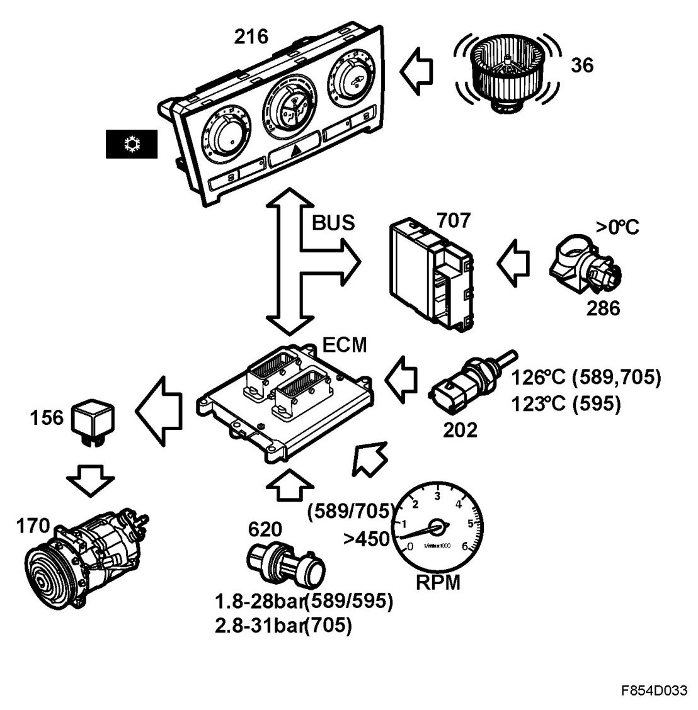
A/C in on position.
The ACC sends the A/C engagement request if the ambient temperature exceeds 0 degree C.
The fan must be operating.
Evaporator temperature exceeds 0 degree C.
A/C cut-in and cut-off
A/C cut-in is processed by the engine control module when an A/C request is sent via bus. The engine control module uses engine temperature, A/C pressure sensor, battery voltage and rpm information to determine if the A/C compressor should be engaged.
Conditions for starting or stopping the A/C compressor, B207E/L/R (petrol) and D223L (diesel):
- If the engine temperature exceeds 126 degrees C (petrol), 123 degrees C (diesel), the compressor will be stopped. In order for it to start, the engine temperature must be below 125 degrees C (petrol), 122 degrees C (diesel).
- If the A/C pressure exceeds 28 bar, the compressor is stopped. The compressor will be restarted once the pressure is below 23 bar. When the pressure is below 3.2 bar, the compressor stops. In order for restart to occur, the pressure must be above 3.28 bar.
- Petrol only: If the engine speed is below 450 rpm the compressor is stopped. In order for the compressor to be restarted, the engine speed must exceed 575 rpm.
Conditions for starting or stopping the A/C compressor, Z18XE (petrol):
- If the engine temperature exceeds 126 degrees C the compressor is stopped. In order for the compressor to be started the engine temperature must be below 125 degrees C.
- If the A/C pressure exceeds 31 bar, the compressor is stopped. The compressor will be restarted once the pressure is below 24 bar. When the pressure is below 2.8 bar, the compressor stops. In order for restart to occur, the pressure must exceed 3.2 bar.
- If the rpm is below 450, the compressor is stopped. In order to restart the compressor, the rpm must be above 575.
Conditions for starting or stopping the A/C compressor, B284 (petrol):
- If engine temperature exceeds 123 degrees C the compressor is stopped. In order for the compressor to be started the engine temperature must be below 122 degrees C.
- If the A/C pressure exceeds 30 bar, the compressor is stopped. The compressor will be restarted once the pressure is below 23 bar. When the pressure is below 2.8 bar, the compressor stops. In order for restart to occur, the pressure must be above 3.2 bar.
- If the rpm is below 450, the compressor is stopped. In order to restart the compressor, the rpm must be above 575.
Pressure sensor
Pressure in the A/C system is measured with a pressure sensor mounted on the A/C pipe on the RH side of the condenser. The pressure sensor is connected to the engine control module which receives pressure information. The information is used to start or stop the compressor and radiator fan adjustment.
The radiator fans are controlled in accordance with the table below.
Radiator fan logic, B207E/L/R (petrol), D223L (diesel) and B284
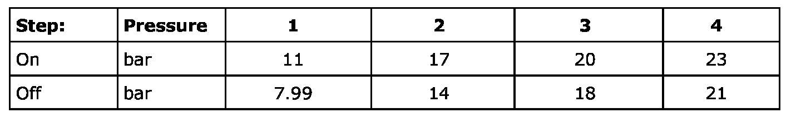
Radiator fan logic, Z18XE (petrol)
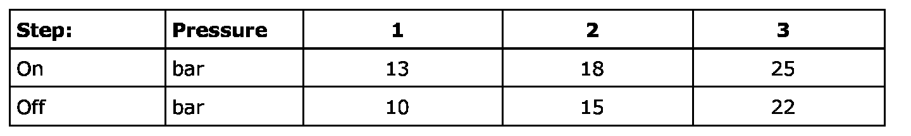
Compressor
The A/C compressor is the wobble plate type and is fitted on the right-hand front side of the engine. Its function is to provide the pressure increase for the refrigerant which is required for the function of the A/C system.
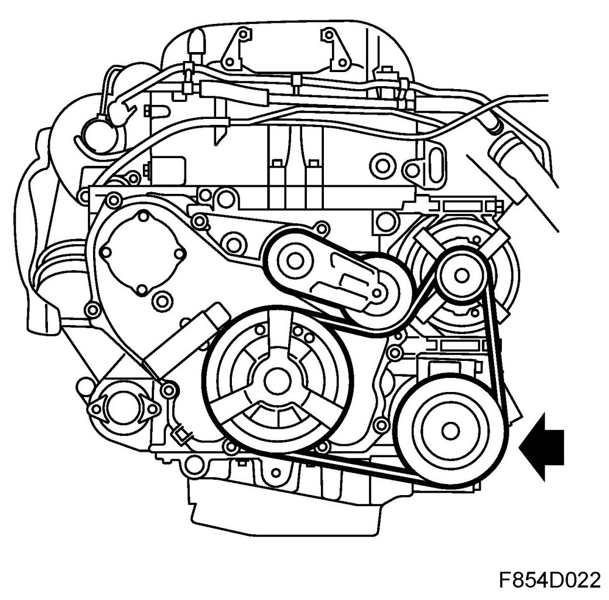
The large amount of power required to achieve this pressure increase is taken from the crankshaft by the compressor via a drive belt system. Start and stop occurs with an electromagnetic clutch integrated in the compressor belt pulley. The electromagnetic clutch solenoid coil protects the clutch from overheating (182.5 ± 5 degrees C). If the overheat protection is activated, the solenoid coil must be replaced as it is not possible to reset the overheat protection function.
The compressor has a variable swept volume, also called displacement. A compressor with variable swept volume adjusts the swept volume to the current cooling requirements in the cabin.
Because the swept volume is always adjusted according to the cooling requirement, the evaporator temperature remains more or less constant. This means that the compressor will not cycle as when a compressor with a fixed displacement is used.
Following connection, the swept volume is increased until it is equivalent to the cooling requirement.
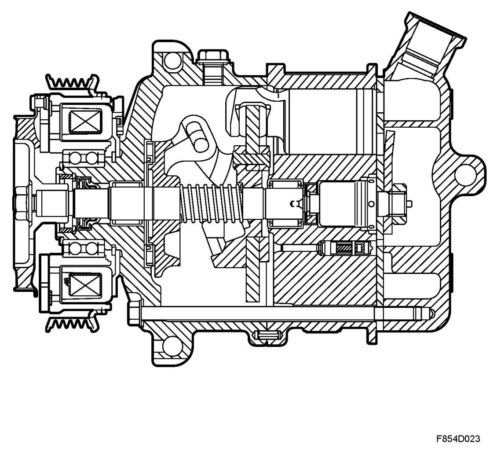
The crankshaft torque requirement increases gradually, which results in a considerable pressure reduction during cut-in compared with a compressor with fixed displacement.
The compressor is a piston-type compressor with seven axial cylinders. The pistons move back and forth in the cylinders and create a pump effect for the refrigerant with help from the inlet and outlet valves. The power from the rotating compressor shaft is transferred to the piston motion using a rocker disc. The pistons are controlled by sliders which remain in contact with both sides of the rocker disc.
Change the piston stroke in order to change the compressor displacement. By changing the rocker disc angle against the compressor shaft, the piston stroke can be lengthened or shortened.
In order to change the rocker disc angle, the pressure differential between the compressor cylinders and the compressor crankcase is used. If the pressure in the crankcase is lower than the pressure on top of the pistons, the pistons and rocker disc move together axially in the direction of the belt pulley. Through a linkage with two locating studs between the rocker disc and the shaft, the rocker disc angle will increase gradually as the pistons and rocker disc move. The increased angle results in an increased swept volume.
The compressor swept volume can therefore be adjusted by changing the compressor crankcase pressure.
Condenser, Z18, Z19, B207
The condenser cools the heated refrigerant which has assumed a gaseous form in order for the refrigerant to condense. For this process to become as efficient as possible, the refrigerant is led by four coils through the condenser, the first of which is divided into 13 channels. The second coil is divided into 10, the third into 7 and the fourth and last coil is divided into 5 channels. This design makes it possible to minimise the size of the condenser without a reduction in capacity.
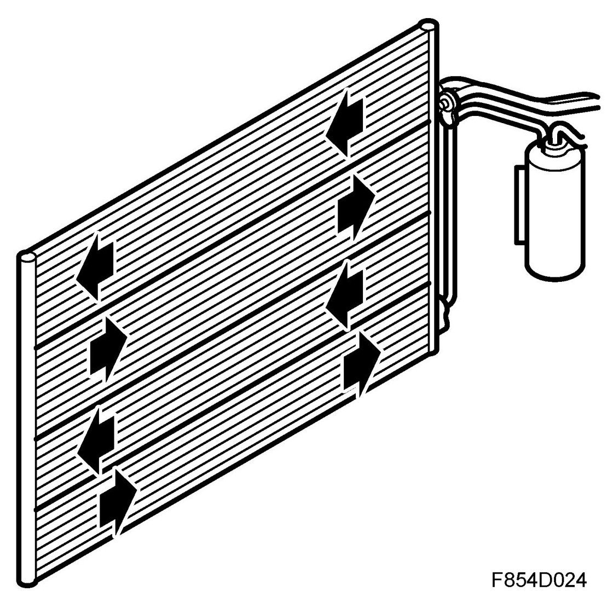
Condenser, B284
The condenser cools the heated refrigerant which has assumed a gaseous form in order for the refrigerant to condense. For this process to become as efficient as possible, the refrigerant is led by four coils through the condenser, the first of which is divided into 17 channels. The second coil is divided into 11, the third into 8 and the fourth and last coil is divided into 6 channels. This design makes it possible to minimise the size of the condenser without a reduction in capacity.
Receiver
The receiver is located on the right-hand side of the condenser. Its function is to filter, store and dehumidify the refrigerant.
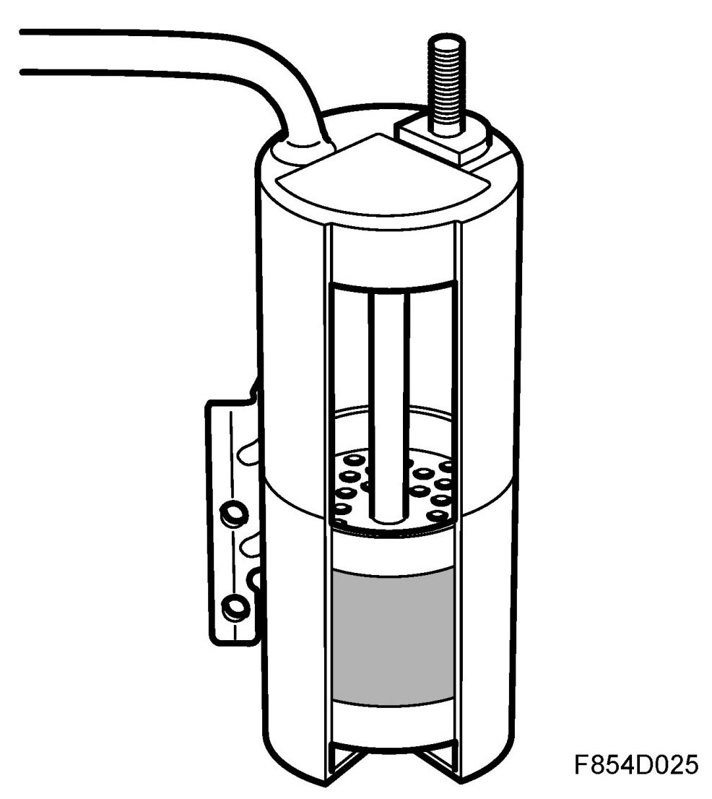
When servicing the A/C system, it is important to plug all open connections to prevent the receiver from absorbing moisture from the air. If the A/C system has been open for more than a total of 15 minutes, the receiver should be replaced since it will have absorbed too much moisture to allow normal function.
Replace the receiver in connection with hose rupture and major leakage as well as compressor breakdown. As long as pressure remains in the system, replacement is not necessary.
There is a leakage detection substance in the refrigerant in the form of a tracing agent. The colour of the tracing agent exists in the form of a tablet in the receiver. The tracing agent is then dissolved in the compressor oil and reaches the entire refrigerant system. The self-illuminating yellow signal colour also facilitates the detection of the smallest leakage in the refrigerant system. When the refrigerant is drained the compressor oil is also drawn off. When the compressor oil is filled a quantity of tracing agent must be added to facilitate leakage detection.
This does not apply in the cases when a new receiver is fitted as it already contains tracing agent. A UV lamp and special glasses are required to identify the tracing agent, as described in the current service manual "1:4 workshop equipment". The refrigerant system is illuminated with the UV lamp. The leaking refrigerant is then visible with the special glasses due to the self-illuminating yellow signal colour.
Expansion valve
The expansion valve regulates the amount of refrigerant that is released into evaporator. The expansion valve is located in the bulkhead partition space near the A/C hose passage into the bulkhead in all models.
The expansion valve consists of a spring-loaded ball located on the high-pressure side. The ball is connected via a pressure lever to a diaphragm in a gas-filled chamber on the low-pressure side of the valve. The spring maintains a constant pressure on the ball. The pressure from the pressure lever exerted on the ball is dependent on the pressure inside the gas-filled chamber. The pressure in the chamber is dependent on the refrigerant temperature in the evaporator outlet.
If the temperature of the refrigerant from the evaporator passing through the expansion valve low pressure side decreases, the pressure inside the gas-filled chamber is also decreased. The spring exerts pressure on the ball and pressure lever. The diaphragm cannot withstand the pressure and the expansion valve restricts the flow area.
If the temperature of the refrigerant from the evaporator increases, the pressure inside the gasfilled chamber also increases. The diaphragm presses against the pressure lever and the ball, the spring is compressed and the expansion valve opens. A larger amount of refrigerant is allowed through, which increases the cooling effect and decreases the evaporator temperature.
Evaporator
The evaporator, which is located in the climate control unit, consists of a heat exchanger (cabin air/refrigerant) through which refrigerant via through a pipe system equipped with cooling fins.
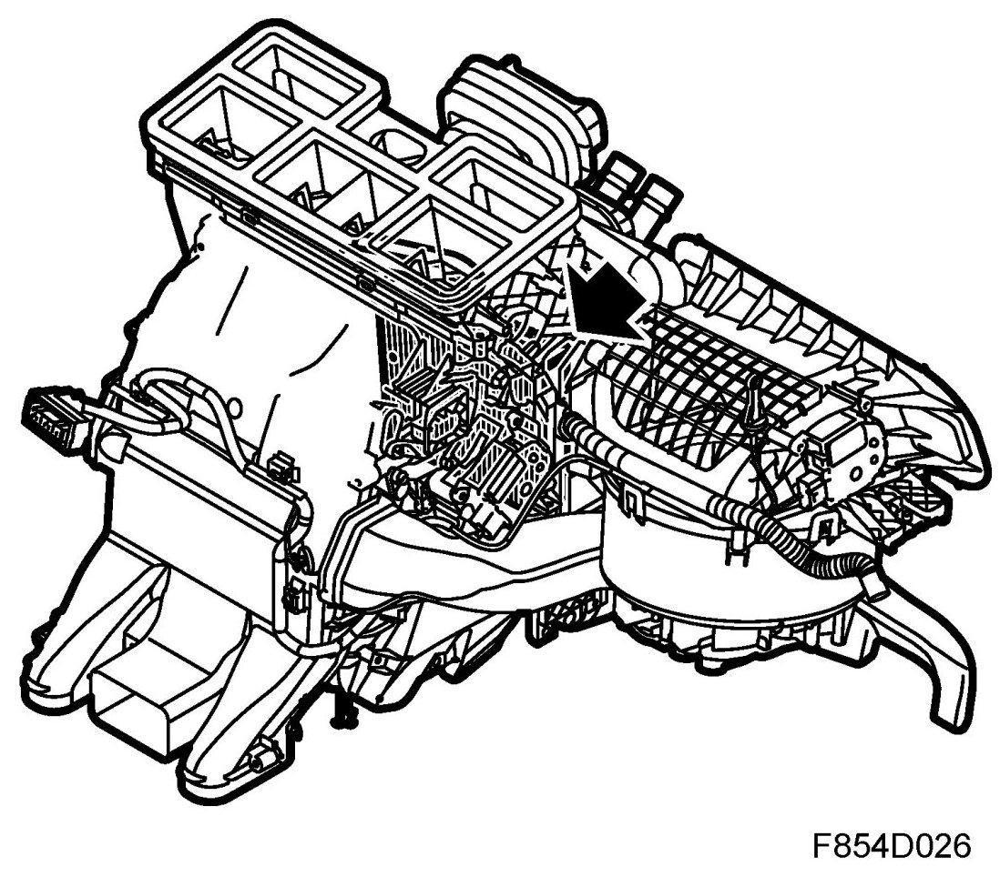
The incoming refrigerant expands and boils (vaporises) in the evaporator pipe system and absorbs heat from the pipes and cooling fins. The cooling fins are warmed, in turn, by the incoming/recirculating cabin air. The incoming cabin air is then cooled to a temperature of approximately 5-10 degrees C, providing the cabin with cooling to the desired temperature.
When heat is absorbed, condensation is formed on the evaporator pipes and cooling fins. This condensation drains out underneath the engine compartment through a drainage hose. During certain climatic conditions, relatively large amounts of water can collect under a parked car.
Pipes, hoses and sealing washers
The pipes and hoses in the A/C system must withstand extremes of both heat and pressure. These components must meet requirements regarding leak integrity and hose diffusion characteristics, or refrigerant leakage through the hose material. Only pipes and hoses manufactured specifically for the A/C system should be used. In order to fulfil these requirements, the inside of the hose is constructed with butyl rubber and the outside is constructed with EPDM rubber.
Sealing washers are used on connections. The sealing washer is a metal washer with a vulcanised rubber seal. The sealing washers should always be checked and replaced when connecting A/C components. It is very important that the right tightening torque is used when assembling.
Service connections
The low pressure side service connection is located on the low-pressure pipe behind the right headlight between the A/C compressor and the expansion valve.
The high-pressure side service connection is located on the high-pressure pipe behind the right headlight between the receiver and the expansion valve.